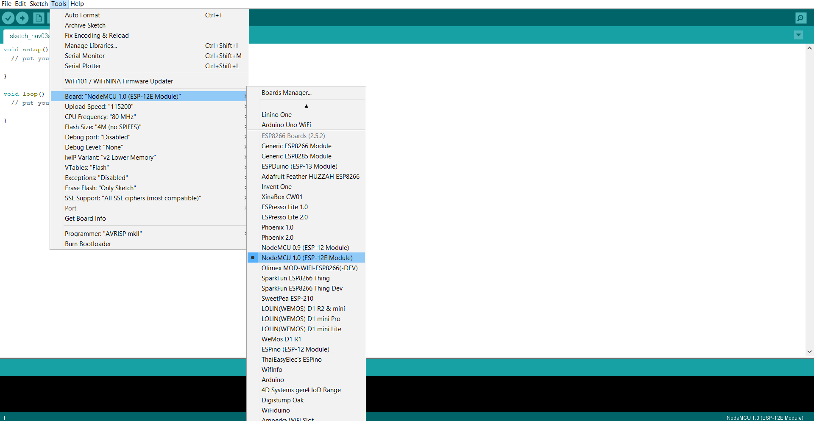

Menambahkan NodeMCU pada Arduino IDE
Bandung, 03 November 2019
Sesuai namanya Arduino IDE umumnya kita pakai untuk memprogram board Arduino seperti Nano, Uno, Mega, atau yang lainnya. Thanks to Open source community, kita bisa memprogram board lain dengan Arduino IDE. Tanpa ba-bi-bu berikut cara menambahkan board ESP8266 pada Arduino IDE:
Aplikasi Arduino IDE bisa di dowload pada halaman resmi Arduino. Untuk instalasi saya yakin udah pada bisa tinggal klik next-next aja buat pengguna Windows. Untuk pengguna sistem operasi unix juga udah disediakan tinggal download, extract, dan install via terminal
Buka program Arduino IDE, buka preferences. Caranya masuk ke menu File lalu
preferences atau dengan shortcut Ctrl + , masukkan:
http://arduino.esp8266.com/stable/package_esp8266com_index.json pada Additional
Boards Managers URLs. lalu klik OK.
Masuk ke menu Tools lalu masuk ke board. Pilih board manager. cari
ESP8266, pilih yang dari ESP8266 Community.
Jika semua proses diatas sudah dilakukan dengan benar, buka menu Tools lagi, pada menu Board coba scroll kebawah, disana pilihan Nodemcu akan muncul seperti pada gambar dibawah.
Ada beberapa kasus pada sistem operasi Windows dimana Arduino IDE gagal terhubung dengan repository ESP8266. solusinya bisa dengan menginstal secara manual. Caranya cukup mudah:
Download file yang dibutuhkan pada link ini.
FIle yang telah didownload diextract, lalu pindahkan isinya ke
C:\Users\user_name\AppData\Local\Arduino15 kemudian restart Arduino IDE bila
masih terbuka.